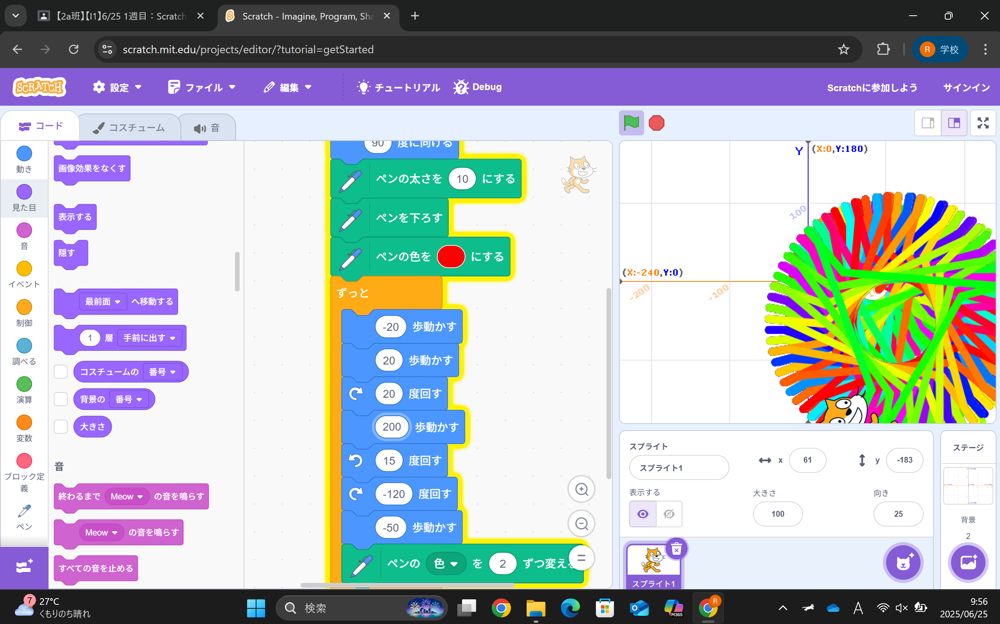

1週目のレポート ： 公大高専１年実習I-1
2a班10番 酒井健太朗
第1週目
1-1 サイエンスアート

1.内容
サイエンスアートではscratchでプログラミングをしました。最初に猫を好きなようにプログラムします。
その猫が動いた後に線を引くことで模様が描かれるという仕組みになっています。線を太くしたり、色を変えるなどをして
オリジナルの模様を描きました。
2.感想
中学校ではscratchの存在を知っていたけれど使ったことがありませんでした。
実際に体験して思っていたよりも簡単でした。それと同時に早くC言語を使いこなしたいと思いました。
1-2 ゲーム
1.内容
scratchでプログラミングをします。このゲームの仕組みは、十字キーの左右のボタンを押して
写真に写っている青い猫を動かします。そして、ランダムで落ちてくる障害物を獲ります。
獲った障害物の数の10倍の点数が左上に表示されます。
2.感想
ゲームを作のはとても難しいことだと思っていたけれど、scratchを使用してゲームを作ることが
簡単だと感じました。ですが、もっと自由なゲームを作るにはプログラミング言語を覚えないといけないので
プログラミング言語を学ぶことが楽しみになりました。
1-3 ホームページ作成
私のホームページ
1.内容
githubのアカウントと作成しクラスルームに送られたリンクからホームページをコピーする
そのあとホームページを編集し自分のIDに変え、レポートを書く。
2.感想
このホームページ作りは作るための環境が整っている状態から始まると思っていたけれど
自分のリンクを作るところから始まって本格的だと思いました。
各ページへのリンク
1週目のレポート
2週目のレポート
3週目のレポート
私のホームページ